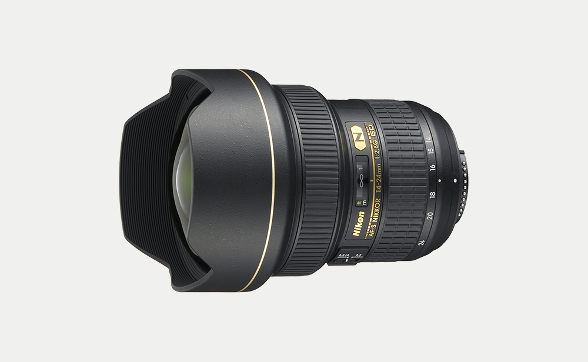
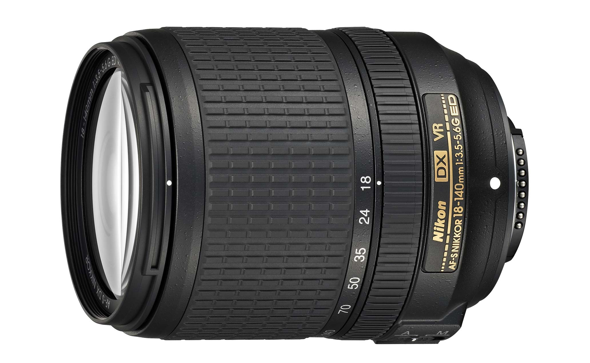
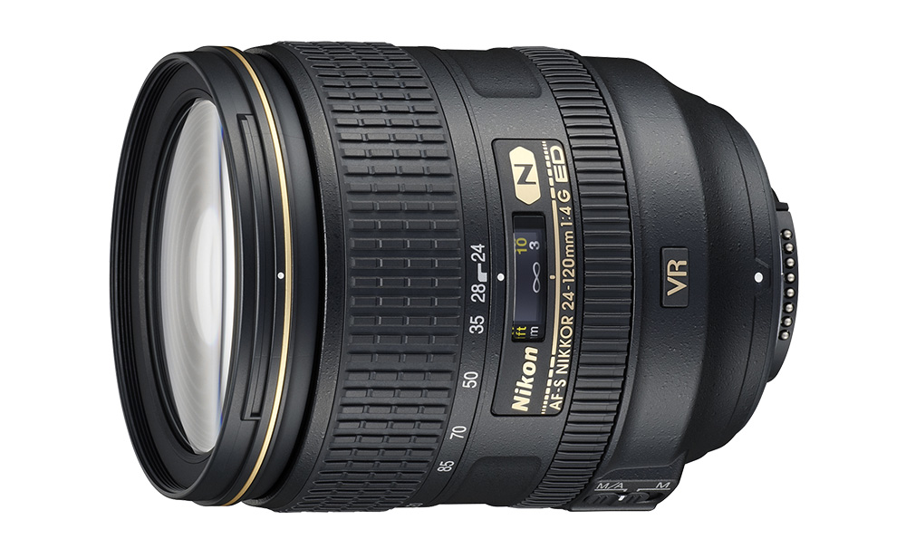

Nikon va sta alaturi cu o gama larga de obiective Nikkor.

0,28 m/0,9 ft. cea mai apropiată distanță de focalizare cu distanță focală 18-24 mm

Compatibil cu formatul DX, putere mare aprox. Obiectiv cu zoom normal de 7,8x care acoperă un interval de distanțe focale de la 18 la 140 mm (unghiul de vedere este echivalent cu cel al unui obiectiv cu o distanță focală de la 27 la 210 mm în format FX/35 mm)

Reducerea vibrațiilor (VR) oferă un efect echivalent cu o viteză de expunere cu 4,0 opriri mai rapidă în modul NORMAL.